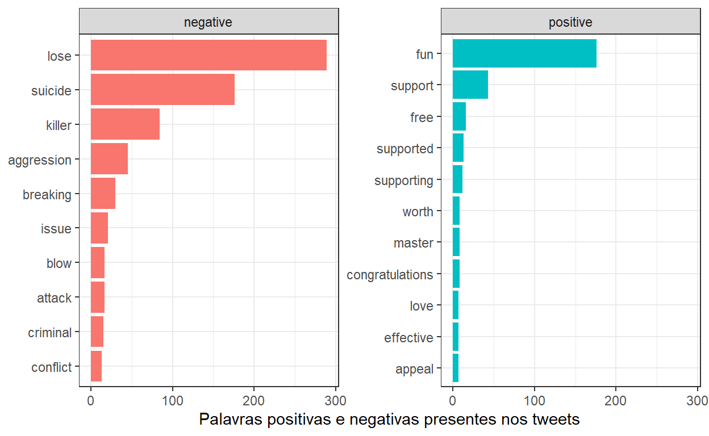

Maioria apoia decisao
As operadoras de cartão de crédito Visa e Mastercard, assim como inúmeras empresas, suspenderam suas atividades na Rússia no dia 05 de março como parte das ações contra a invasão da Ucrânia.
As decisões empresariais foram rapidamente compartilhadas nas mídias sociais entre jornalistas, usuários e stakeholders.
Como a ação foi comentada no Twitter? Os sentimentos associados foram positivos ou negativos? É isso que vamos verificar.
Coletei 1856 tweets pulicados com a #mastercard e 2000 com a #visa, totalizando 3856 tweets sobre o tema.
Verifica-se claramente no gráfico o aumento das publicações e conversas relacionadas às operadoras de cartão de crédito após a decisão das empresas, com um pico de postagens imediatamente após a decisão.
Pode-se verificar, na figura que compara as postagens das empresas, que o comportamento foi o mesmo: aumento das discussões sobre as marcas no Twitter.
❗️#Mastercard has blocked a number of financial institutions’ access to the payment network as a result of sanctions orders against #Russia (@nexta_tv, Tweet com 3279 likes e 447 retweets até a coleta dos dados)
Não é nenhuma surpresa, dado o contexto, que os termos mais frequentes associados à Mastercard sejam os respectivos nomes das empresas e associações aos países em conflito, além das implicações relacionadas aos sistemas de pagamento.
Quando o foco são os bigramas, a frequência associada de palavras indica um movimento interessante: formam-se segumentos de discussão relacionados aos sistemas de pagamento; indicações que a Rússia teria errado em seus cálculos e comitido “suicídio”, considerando todo o contexto das sanções internacionais; e a presença das criptomoedas nos comentários.
Apesar de meios de pagamento diferentes, há uma tendência de massificação - pelo menos no Twitter - sobre o papel das criptomoedas (que poderiam ser uma alternativa à Russia, mas com indicações no contexto de também serem acionadas como parte das sanções econômicas).
As hashtags usadas em conjunto com #mastercard e #visa apenas endossam o contexto da guerra, não havendo propriamente uma novidade.
| Hashtags | Frequencia |
|---|---|
| #Mastercard | 1237 |
| #Visa | 960 |
| #Russia | 484 |
| #MasterCard | 358 |
| #Ukraine | 251 |
| #visa | 247 |
| #VISA | 242 |
| #mastercard | 218 |
| #UkraineRussiaWar | 145 |
| #Bitcoin | 123 |
A nuvem de palavras abaixo sintetiza bem os termos mais frequentes utilizados com a #mastercard. Fica evidente como o assunto repercutiu na rede social destacando um sentimento nos comentários contra a Rússia.
A análise de sentimentos permite mapear como as postagens repercutiram a decisão empresarial: foi positivo? foi negativo?
Na figura, observa-se claramente os polos dos sentimentos positivos e negativos.
No polo positivo, os comentários são favoráveis à decisão da empresa e apresenta em destaque palavras sobre suporte à Ucrânia, solidariedade e apoio à decisão de suspensão das operações.
No polo negativo, os sentimentos são condenações à Rússia e ao Putin em várias frentes, inclusive com um tom de torcida contra as ações bélicas presente em palavras como lose, killer, suicide.
Ao analisar as palavras mais frequentes que contribuíram para a formação desses sentimentos, nota-se claramente o suporte da maioria dos usuários à decisão da Mastercard.

A decisão da Mastercard em suspender as operações na Rússia foi aprovada pela maioria dos usuários do Twitter na amostra de dados coletados.
Referências
Muitos dos códigos usados nesse exemplo de análise de dados textuais foram adaptados do já clássico livro Text Mining with R.
SILGE, Julia; ROBINSON, David. Text mining with R: A tidy approach.”O’Reilly Media, Inc.”, 2017.
For attribution, please cite this work as
Teixeira (2022, March 7). GPPDEO - Grupo de Pesquisa/UFMA: Operadoras de cartão de crédito suspendem atividades na Rússia: repercussão no Twitter. Retrieved from https://gppdeo.org/posts/2022-03-07-mastercard/
BibTeX citation
@misc{teixeira2022operadoras,
author = {Teixeira, Tadeu Gomes},
title = {GPPDEO - Grupo de Pesquisa/UFMA: Operadoras de cartão de crédito suspendem atividades na Rússia: repercussão no Twitter},
url = {https://gppdeo.org/posts/2022-03-07-mastercard/},
year = {2022}
}